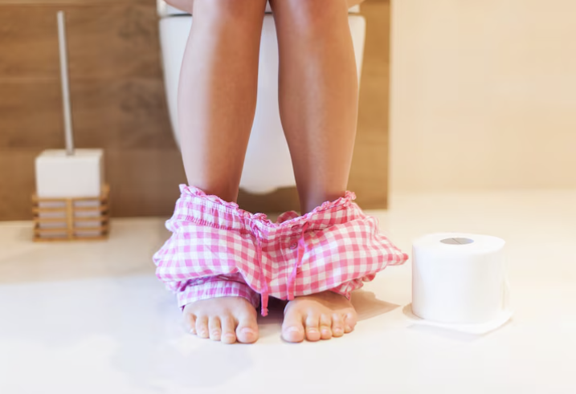

Votre pression artérielle varie tout au long de la journée !
Stress, émotions, activité physique… tout peut l’influencer.
Pour un suivi fiable, mieux vaut la mesurer au calme et de manière régulière.
Préserver la santé de ses reins passe par des habitudes de vie simples et un suivi régulier : découvrons comment les protéger au quotidien.
Comment protéger ses reins au quotidien ?
Gardez un œil sur votre tension

Une bonne pression artérielle, c’est moins de stress pour vos reins ! Essayez de la maintenir sous 130/90 mmHg. L'automesure à domicile peut être une bonne habitude.
Attention aux médicaments !
Certains médicaments, même en vente libre, peuvent fatiguer vos reins.
Voici ceux à éviter sans avis médical :
- Anti-inflammatoires (ex : ibuprofène)
- Médicaments effervescents riches en sel
- Certains laxatifs et antiacides
Un petit check-up des urines ?

Votre médecin peut prescrire un test pour vérifier la présence de protéines dans les urines et vous proposer des traitements protecteurs pour vos reins si nécessaire.
Bon réflexe : Si vous passez un scanner ou une IRM, informez le radiologue de votre maladie rénale.
Prendre sa tension artérielle chez soi est un geste simple et utile pour surveiller sa santé au quotidien. Voici comment bien le faire.
Prendre sa tension à la maison : mode d'emploi
üì• T√©l√©charger un relev√© d'automesure tensionnelle
Pourquoi mesurer sa tension ?
Quand et comment la mesurer ?
La règle des 3-3-3
• 3 mesures le matin avant le petit-déjeuner et la prise de médicaments
• 3 mesures le soir avant le coucher, avant le diner et la prise de médicaments
• Pendant 3 jours consécutifs
Les bons gestes pour une mesure fiable
• Asseyez-vous confortablement, dos bien droit, bras posé sur une table
• Reposez-vous 5 minutes avant la première mesure
• Attendez 2 minutes entre chaque prise
• Notez bien les chiffres affichés sur votre tensiomètre
Comment lire les résultats ?
Votre tensiomètre affiche deux nombres :
• La pression systolique (le plus haut) : la pression maximale dans les artères
• La pression diastolique (le plus bas) : la pression minimale dans les artères
Comment calculer la moyenne ?
• Additionnez toutes les mesures systoliques et divisez par 18
• Faites la même chose pour les diastoliques
Un doute ? Pas de panique, votre médecin pourra vérifier et interpréter vos résultats !
Petit plus : Adoptez un mode de vie sain pour garder une tension au top ! Moins de sel, plus d’activité et… moins de stress !
Comprendre son Bilan Sanguin : Un petit guide simple et clair !
Pourquoi c'est important ?
Un bilan sanguin permet de surveiller la santé de tes reins et d'adapter ton alimentation si besoin. Mais pas de panique, voici les points clés à retenir !
Les Reins, des Filtres Performants !
Imagine tes reins comme une machine à café :
• La mouture de café = Protéines (albumine)
• L'eau qui passe à travers = Ce que ton corps élimine
• Les déchets filtrés = Urée, créatinine, potassium, phosphore
• La Tension artérielle = la pression du percolateur
Les Principaux Éléments à Surveiller :
Créatinine & Clairance de la créatinine
Indiquent si les reins filtrent bien les déchets. Ces mesures sont inversement proportionnelles :
• Plus la clairance est basse, plus les reins sont fatigués.
• Plus la créatinine est haute, plus les reins sont fatigués.
Urée & Acide urique
• Déchets issus des protéines, à surveiller pour ajuster son alimentation.
Potassium & Phosphore
• Trop de potassium peut affecter le cœur.
• Trop de phosphore peut provoquer des démangeaisons et des douleurs articulaires et favorise la calcification des artères qui vont devenir plus rigides et parfois se boucher.
Calcium & Parathormone (PTH)
• Un manque de calcium peut signaler un déséquilibre à cause des reins et fragiliser les os.
• L'excès de PTH stimule l'activité des cellules osseuses (ostéoclastes), ce qui, avec le temps, peut entraîner une fragilisation des os due à la perte de calcium.
L’Analyse des Urines, un Outil Clé !
Pourquoi c'est important ?
• Protéinurie : Si les protéines passent dans les urines, cela peut indiquer un problème rénal.
• Diurèse : Mesurer la quantité d'urine sur 24h aide à surveiller la fonction des reins.
Astuce : Adapter son alimentation (moins de sel, de phosphore et de potassium) aide à protéger ses reins sur le long terme !